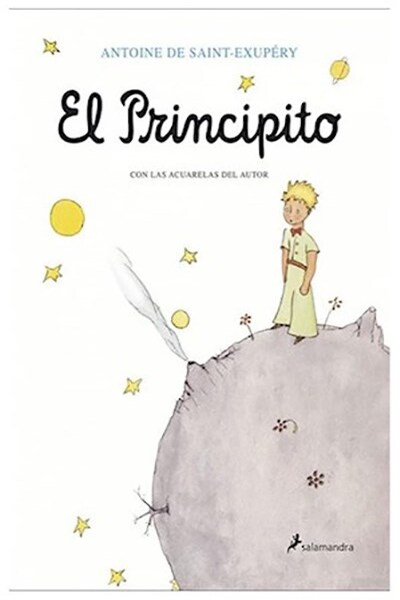

EL Principito
Antoine de Saint-Exupéry
El Principito es una narración corta del escritor francés Antoine de Saint-Exupéry. La historia se centra en un pequeño príncipe que realiza una travesía por el universo. En este viaje descubre la extraña forma en que los adultos ven la vida y comprende el valor del amor y la amistad. El libro comienza con un aviador que se encuentra perdido en el desierto del Sahara, después de haber tenido una avería en su avión. Entonces aparece un pequeño príncipe. El Principito es un niño de otro planeta que intenta regresar a casa para cuidar de su pequeño planeta y de su gran amor, una rosa vanidosa